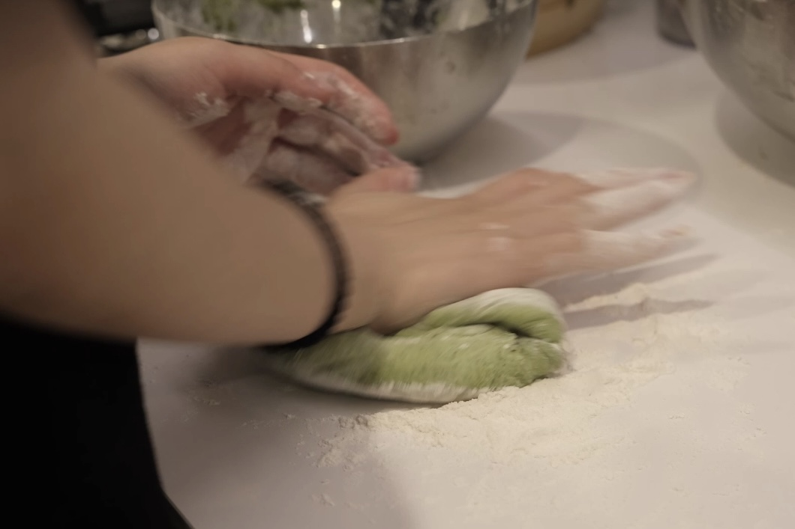

INGREDIENTS
Spinach, Flour, Yeast
Spinach Steamed Buns
Steamer Version
菠菜馒头
THIS DISH ISRECOMMENDED BY EMILY ZHONG
When Emily was a child, she was diagnosed with an iron deficiency in her body. Spinach is a good
source of iron, but unfortunately, Emily finds it difficult to tolerate the taste of spinach. As
a
result, her parents often puree spinach as a filling for steamed buns. This not only enhances
the
appearance of the buns but also allows Emily to consume spinach more easily. The same approach
can
be applied to various other fruits and vegetables.
STEP 1: Wash the spinach and choose the tender, brightly colored leaves.
STEP 2: When the water boils, blanch the spinach for 30 seconds, then
remove it.
STEP 3: Juice the spinach with water, then add the resulting juice to
the flour+3g of yeast.
STEP 4: Knead the flour and spinach juice into a dough. Adjust the
consistency by adding more flour if it's too thin or more spinach juice
if there's too much flour.
STEP 5: Shape the dough into a round shape, cover it, and let it ferment
for about 2 hours.

STEP 6: After two hours, when the dough has developed small honeycomb-like
holes, remove it from the container. Gently knead it to release any trapped
air from the fermentation process, then shape it into a long strip.
STEP 7: Divide the long strips into round dough balls.
STEP 8: After the water comes to a boil, place the dough in the steamer
and steam for 15 minutes before serving.
(2023.10.1)